#001 · physical
Media page
Round button 1
Navigation · Both editions
Video: 00:00:34–00:01:05
Compare source crop

168 purpose-built SVG assets. These are the final design candidates: clean vector artwork for CT, with the walkthrough crop available only as an audit reference.
Three icon formats: square touchscreen tiles, wide dial-display labels, and physical/Fn legends. Every card carries its exact catalog mapping and timestamp.
#001 · physical
Round button 1
Navigation · Both editions
Video: 00:00:34–00:01:05
#002 · physical
Round button 2
Navigation · Both editions
Video: 00:00:34–00:01:05

#003 · physical
Round button 3
Navigation · Both editions
Video: 00:00:34–00:01:05

#004 · physical
Round button 4
Navigation · Both editions
Video: 00:00:34–00:01:05


#005 · physical
Round button 5
Navigation · Both editions
Video: 00:00:34–00:01:05

#006 · physical
Round button 6
Navigation · Both editions
Video: 00:00:34–00:01:05

#007 · physical
Round button 7
Navigation · Both editions
Video: 00:00:34–00:01:05


#008 · physical
Round button 8
Navigation · Both editions
Video: 00:00:34–00:01:05

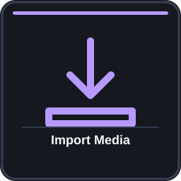
#009 · touch
Touch 1 · top-left
Media / Project · Both editions
Video: 00:02:04–00:02:21

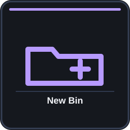
#010 · touch
Touch 2 · top row
Media / Project · Both editions
Video: 00:01:50–00:02:02

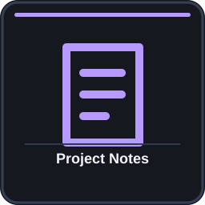
#011 · touch
Touch 3 · top row
Media / Project · Both editions
Video: 00:02:33–00:02:44

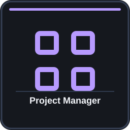
#012 · touch
Touch 4 · top-right
Media / Project · Both editions
Video: 00:02:44–00:02:51


#013 · touch
Touch 5 · middle-left
Media / Project · Both editions
Video: 00:03:01–00:03:10

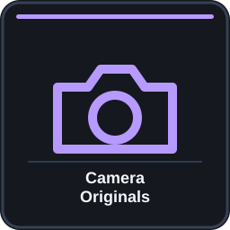
#014 · touch
Touch 6 · middle row
Media / Project · Both editions
Video: 00:03:10–00:03:15

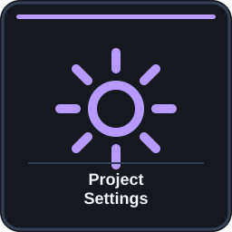
#015 · touch
Touch 7 · middle row
Media / Project · Both editions
Video: 00:01:35–00:01:50

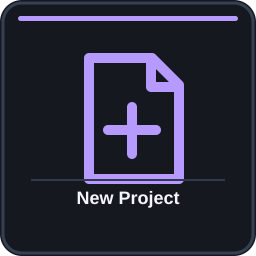
#016 · touch
Touch 8 · middle-right
Media / Project · Both editions
Video: 00:02:51–00:02:57

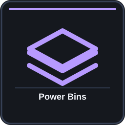
#017 · touch
Touch 9 · bottom-left
Media / Project · Both editions
Video: 00:02:21–00:02:33

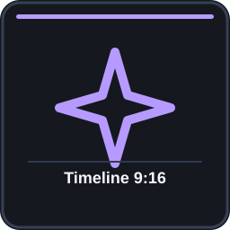
#018 · touch
Touch 10 · bottom row
Media / Project · Studio only
Video: 00:03:15–00:03:29; 00:21:03–00:21:14

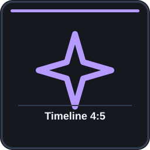
#019 · touch
Touch 11 · bottom row
Media / Project · Studio only
Video: 00:03:15–00:03:29; 00:21:14–00:21:19

#020 · touch
Touch 12 · bottom-right
Media / Project · Studio only
Video: 00:03:15–00:03:29; 00:21:19–00:21:24

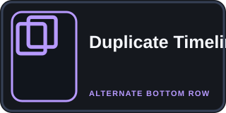
#021 · physical
Alternate bottom row
Media / Project · Free edition
Video: 00:03:31–00:03:36

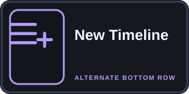
#022 · physical
Alternate bottom row
Media / Project · Free edition
Video: 00:03:31–00:03:36


#023 · touch
Timer touch 1
Media / Break Timer · Studio only
Video: 00:03:45–00:03:56

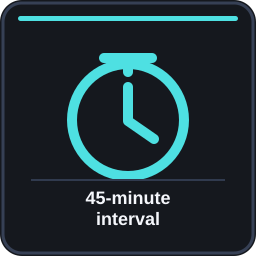
#024 · touch
Timer touch 2
Media / Break Timer · Studio only
Video: 00:03:36–00:04:06

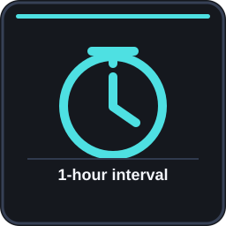
#025 · touch
Timer touch 3
Media / Break Timer · Studio only
Video: 00:03:36–00:04:06

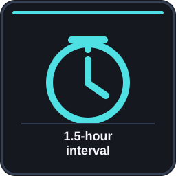
#026 · touch
Timer touch 4
Media / Break Timer · Studio only
Video: 00:03:36–00:04:06

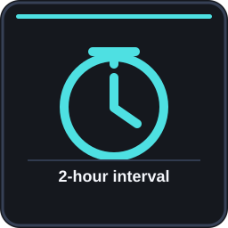
#027 · touch
Timer touch 5
Media / Break Timer · Studio only
Video: 00:03:36–00:04:06

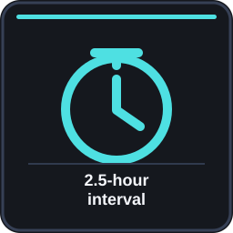
#028 · touch
Timer touch 6
Media / Break Timer · Studio only
Video: 00:03:36–00:04:06

#029 · touch
Timer touch 7
Media / Break Timer · Studio only
Video: 00:03:36–00:04:06


#030 · touch
Timer touch 8
Media / Break Timer · Studio only
Video: 00:03:36–00:04:06

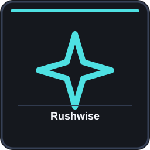
#031 · touch
Timer touch 9
Media / Break Timer · Studio only
Video: 00:04:01–00:04:06

#032 · touch
Timer touch 10
Media / Break Timer · Studio only
Video: 00:15:08–00:15:29

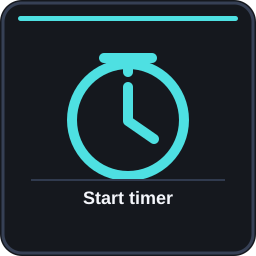
#033 · touch
Timer touch 11
Media / Break Timer · Studio only
Video: 00:03:45–00:03:56

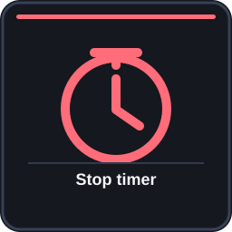
#034 · touch
Timer touch 12
Media / Break Timer · Studio only
Video: 00:03:59–00:04:01


#035 · touch
Touch 1 · top-left
Edit 1 · Both editions
Video: 00:07:06–00:07:20

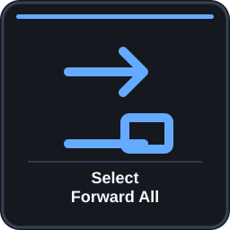
#036 · touch
Touch 2 · top row
Edit 1 · Both editions
Video: 00:07:06–00:07:16

#037 · touch
Touch 3 · top row
Edit 1 · Both editions
Video: 00:07:20–00:07:42

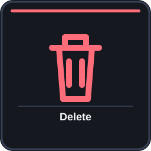
#038 · touch
Touch 4 · top-right
Edit 1 · Both editions
Video: 00:06:41–00:06:51

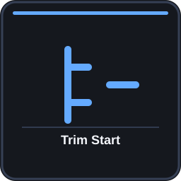
#039 · touch
Touch 5 · middle-left
Edit 1 · Both editions
Video: 00:06:51–00:07:03

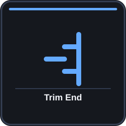
#040 · touch
Touch 6 · middle row
Edit 1 · Both editions
Video: 00:06:51–00:07:03

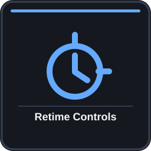
#041 · touch
Touch 7 · middle row
Edit 1 · Both editions
Video: 00:07:57–00:08:03

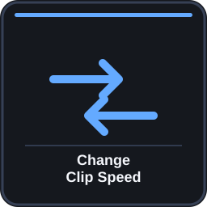
#042 · touch
Touch 8 · middle-right
Edit 1 · Both editions
Video: 00:07:42–00:07:57

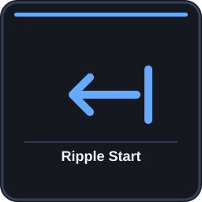
#043 · touch
Touch 9 · bottom-left
Edit 1 · Both editions
Video: 00:06:07–00:06:21

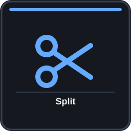
#044 · touch
Touch 10 · bottom row
Edit 1 · Both editions
Video: 00:06:32–00:06:41

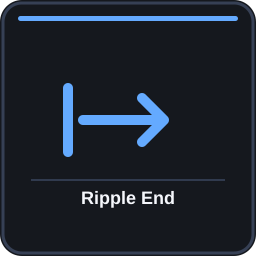
#045 · touch
Touch 11 · bottom row
Edit 1 · Both editions
Video: 00:06:21–00:06:32

#046 · touch
Touch 12 · bottom-right
Edit 1 · Both editions
Video: 00:05:31–00:05:40

#047 · dial
Top-left dial · turn
Edit 1 · Both editions
Video: 00:05:09–00:05:13

#048 · dial
Top-left dial · press
Edit 1 · Both editions
Video: 00:08:03–00:08:13

#049 · dial
Middle-left dial · turn
Edit 1 · Both editions
Video: 00:08:19–00:08:28

#050 · dial
Middle-left dial · press
Edit 1 · Both editions
Video: 00:08:13–00:08:16

#051 · dial
Bottom-left dial · turn
Edit 1 · Both editions
Video: 00:08:28–00:08:43

#052 · dial
Bottom-left dial · press
Edit 1 · Both editions
Video: 00:08:28–00:08:43

#053 · dial
Top-right dial · turn
Edit 1 · Both editions
Video: 00:05:13–00:05:18

#054 · dial
Top-right dial · press
Edit 1 · Both editions
Video: 00:08:16–00:08:19

#055 · dial
Middle-right dial · turn
Edit 1 · Both editions
Video: 00:05:22–00:05:25

#056 · dial
Middle-right dial · press
Edit 1 · Both editions
Video: 00:04:44–00:04:52

#057 · dial
Bottom-right dial · turn
Edit 1 · Both editions
Video: 00:05:18–00:05:22

#058 · dial
Bottom-right dial · press
Edit 1 · Both editions
Video: 00:05:44–00:06:07

#059 · physical
Center wheel · turn
Edit 1 · Both editions
Video: 00:04:59–00:05:07

#060 · physical
Center wheel · press
Edit 1 · Both editions
Video: 00:05:40–00:05:44

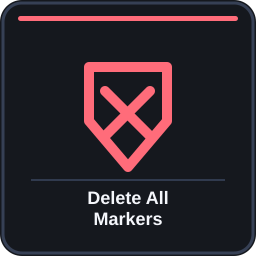
#061 · touch
Touch 1 · top-left
Edit 2 · Both editions
Video: 00:08:49–00:09:00

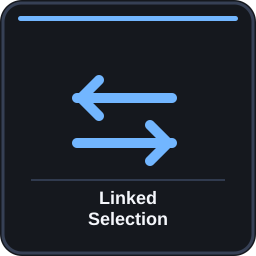
#062 · touch
Touch 2 · top row
Edit 2 · Both editions
Video: 00:09:00–00:09:15

#063 · touch
Touch 3 · top row
Edit 2 · Both editions
Video: 00:09:15–00:09:50

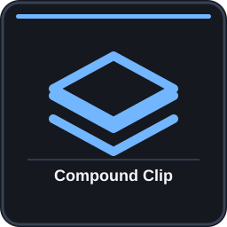
#064 · touch
Touch 4 · top-right
Edit 2 · Both editions
Video: 00:09:51–00:10:06

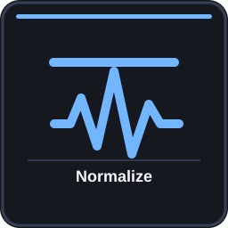
#065 · touch
Touch 5 · middle-left
Edit 2 · Both editions
Video: 00:10:06–00:10:16

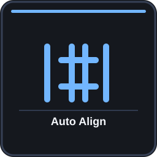
#066 · touch
Touch 6 · middle row
Edit 2 · Both editions
Video: 00:10:16–00:10:28

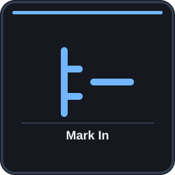
#067 · touch
Touch 7 · middle row
Edit 2 · Both editions
Video: 00:10:28–00:10:34

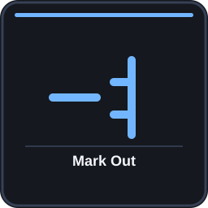
#068 · touch
Touch 8 · middle-right
Edit 2 · Both editions
Video: 00:10:28–00:10:34

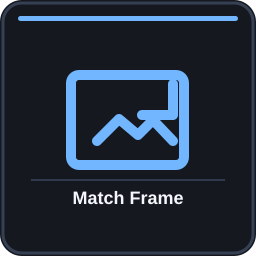
#069 · touch
Touch 9 · bottom-left
Edit 2 · Both editions
Video: 00:10:42–00:10:52

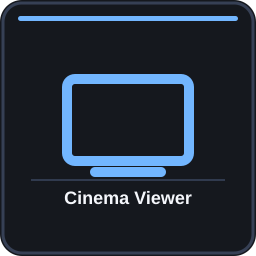
#070 · touch
Touch 10 · bottom row
Edit 2 · Both editions
Video: 00:10:52–00:10:59

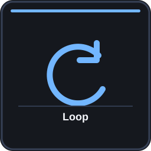
#071 · touch
Touch 11 · bottom row
Edit 2 · Both editions
Video: 00:10:34–00:10:42

#072 · touch
Touch 12 · bottom-right
Edit 2 · Both editions
Video: 00:05:31–00:05:40

#073 · dial
Top-left dial · press
Edit 2 · Both editions
Video: 00:10:59–00:11:12

#074 · dial
Middle-left dial · press
Edit 2 · Both editions
Video: 00:10:59–00:11:12

#075 · dial
Bottom-left dial · press
Edit 2 · Both editions
Video: 00:10:59–00:11:12

#076 · dial
Top-right dial · press
Edit 2 · Both editions
Video: 00:10:59–00:11:12

#077 · dial
Middle-right dial · press
Edit 2 · Both editions
Video: 00:10:59–00:11:12

#078 · dial
Bottom-right dial · press
Edit 2 · Both editions
Video: 00:10:59–00:11:12

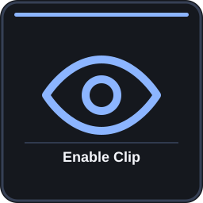
#079 · touch
Touch 1 · top-left
Edit 3 · Both editions
Video: 00:11:52–00:11:59

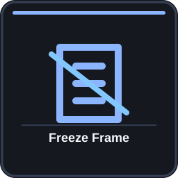
#080 · touch
Touch 2 · top row
Edit 3 · Both editions
Video: 00:11:59–00:12:15

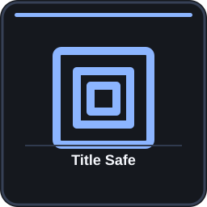
#081 · touch
Touch 3 · top row
Edit 3 · Both editions
Video: 00:12:27–00:12:36

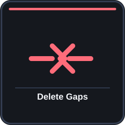
#082 · touch
Touch 4 · top-right
Edit 3 · Both editions
Video: 00:11:20–00:11:43

#083 · touch
Touch 5 · middle-left
Edit 3 · Both editions
Video: 00:12:36–00:12:42

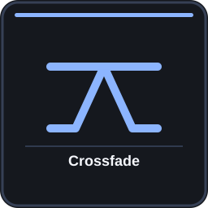
#084 · touch
Touch 6 · middle row
Edit 3 · Both editions
Video: 00:12:15–00:12:27

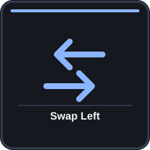
#085 · touch
Touch 7 · middle row
Edit 3 · Both editions
Video: 00:11:43–00:11:52

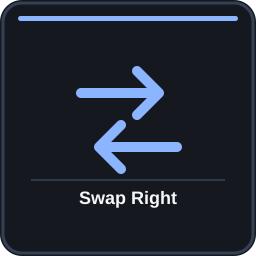
#086 · touch
Touch 8 · middle-right
Edit 3 · Both editions
Video: 00:11:43–00:11:52

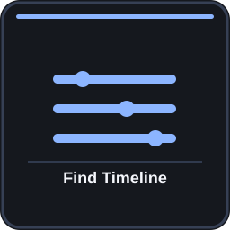
#087 · touch
Touch 9 · bottom-left
Edit 3 · Both editions
Video: 00:12:41–00:12:46

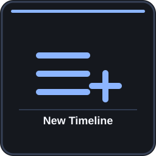
#088 · touch
Touch 10 · bottom row
Edit 3 · Both editions
Video: 00:04:18–00:04:37; 00:12:46–00:12:50

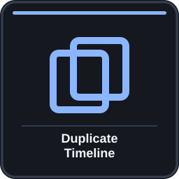
#089 · touch
Touch 11 · bottom row
Edit 3 · Both editions
Video: 00:13:04–00:13:17

#090 · touch
Touch 12 · bottom-right
Edit 3 · Both editions
Video: 00:05:31–00:05:40

#091 · dial
Top-left dial · press
Edit 3 · Both editions
Video: 00:12:50–00:13:04

#092 · dial
Middle-left dial · press
Edit 3 · Both editions
Video: 00:12:50–00:13:04

#093 · dial
Bottom-left dial · press
Edit 3 · Both editions
Video: 00:12:50–00:13:04

#094 · dial
Top-right dial · press
Edit 3 · Both editions
Video: 00:12:50–00:13:04

#095 · dial
Middle-right dial · press
Edit 3 · Both editions
Video: 00:12:50–00:13:04

#096 · dial
Bottom-right dial · press
Edit 3 · Both editions
Video: 00:12:50–00:13:04

#097 · physical
Undo
Physical keys & Fn layer · Both editions
Video: 00:13:50–00:13:54

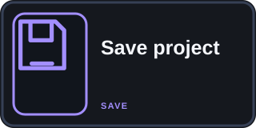
#098 · physical
Save
Physical keys & Fn layer · Both editions
Video: 00:13:54–00:14:00

#099 · physical
Square A
Physical keys & Fn layer · Both editions
Video: 00:14:00–00:14:06

#100 · physical
Square B
Physical keys & Fn layer · Both editions
Video: 00:14:00–00:14:06


#101 · physical
Square C
Physical keys & Fn layer · Both editions
Video: 00:05:25–00:05:31

#102 · physical
Square D
Physical keys & Fn layer · Both editions
Video: 00:05:25–00:05:31

#103 · physical
Square E
Physical keys & Fn layer · Both editions
Video: 00:14:06–00:14:10

#104 · physical
Fn + B
Physical keys & Fn layer · Both editions
Video: 00:13:41–00:13:50

#105 · physical
Fn + round 1
Physical keys & Fn layer · Both editions
Video: 00:14:15–00:14:23

#106 · physical
Fn + round 2
Physical keys & Fn layer · Both editions
Video: 00:14:23–00:14:28

#107 · physical
Fn + round 3
Physical keys & Fn layer · Both editions
Video: 00:14:28–00:14:32

#108 · physical
Fn + round 4
Physical keys & Fn layer · Both editions
Video: 00:14:32–00:14:34

#109 · physical
Fn + round 5
Physical keys & Fn layer · Both editions
Video: 00:14:34–00:14:38

#110 · physical
Fn + round 6
Physical keys & Fn layer · Both editions
Video: 00:14:38–00:14:42

#111 · physical
Fn + round 7
Physical keys & Fn layer · Both editions
Video: 00:14:42–00:14:47

#112 · physical
Fn + C
Physical keys & Fn layer · Both editions
Video: 00:14:48–00:14:56

#113 · physical
Fn + A
Physical keys & Fn layer · Both editions
Video: 00:14:51–00:15:08

#114 · physical
Fn + D
Physical keys & Fn layer · Both editions
Video: 00:17:47–00:17:55

#115 · touch
Touch 1 · top-left
Color · Both editions
Video: 00:15:40–00:15:48

#116 · touch
Touch 2 · top row
Color · Both editions
Video: 00:17:38–00:17:43

#117 · touch
Touch 3 · top row
Color · Both editions
Video: 00:17:43–00:17:47

#118 · touch
Touch 4 · top-right
Color · Both editions
Video: 00:16:45–00:17:01


#119 · touch
Touch 5 · middle-left
Color · Both editions
Video: 00:15:52–00:15:57

#120 · touch
Touch 6 · middle row
Color · Both editions
Video: 00:16:35–00:16:40

#121 · touch
Touch 7 · middle row
Color · Both editions
Video: 00:16:40–00:16:45

#122 · touch
Touch 8 · middle-right
Color · Both editions
Video: 00:17:01–00:17:07

#123 · touch
Touch 9 · bottom-left
Color · Both editions
Video: 00:17:22–00:17:28

#124 · touch
Touch 10 · bottom row
Color · Both editions
Video: 00:17:28–00:17:33

#125 · touch
Touch 11 · bottom row
Color · Both editions
Video: 00:17:12–00:17:18

#126 · touch
Touch 12 · bottom-right
Color · Both editions
Video: 00:17:18–00:17:22

#127 · dial
Top-left dial · turn
Color · Studio only
Video: 00:16:02–00:16:26

#128 · dial
Top-left dial · press
Color · Studio only
Video: 00:16:30–00:16:35

#129 · dial
Middle-left dial · turn
Color · Studio only
Video: 00:16:30–00:16:35

#130 · dial
Middle-left dial · press
Color · Studio only
Video: 00:16:30–00:16:35

#131 · dial
Bottom-left dial · turn
Color · Studio only
Video: 00:16:26–00:16:30

#132 · dial
Bottom-left dial · press
Color · Studio only
Video: 00:16:30–00:16:35


#133 · dial
Top-right dial · turn
Color · Both editions
Video: 00:16:45–00:17:01


#134 · dial
Middle-right dial · turn
Color · Both editions
Video: 00:16:45–00:17:01


#135 · dial
Bottom-right dial · turn
Color · Both editions
Video: 00:16:45–00:17:01

#136 · dial
Top-right dial · press
Color · Both editions
Video: 00:17:33–00:17:38

#137 · touch
Touch 1 · middle-left
Fairlight · Both editions
Video: 00:18:08–00:18:19

#138 · touch
Touch 2 · middle row
Fairlight · Both editions
Video: 00:18:19–00:18:29

#139 · touch
Touch 3 · bottom-left
Fairlight · Both editions
Video: 00:18:39–00:18:48

#140 · touch
Touch 4 · bottom row
Fairlight · Both editions
Video: 00:18:39–00:18:48


#141 · touch
Touch 5 · bottom row
Fairlight · Both editions
Video: 00:18:39–00:18:48

#142 · touch
Touch 6 · bottom-right
Fairlight · Both editions
Video: 00:18:39–00:18:48

#143 · dial
Top-left dial · turn
Fairlight · Both editions
Video: 00:18:48–00:18:57

#144 · dial
Middle-left dial · turn
Fairlight · Both editions
Video: 00:18:29–00:18:34

#145 · dial
Bottom-left dial · turn
Fairlight · Both editions
Video: 00:18:34–00:18:39

#146 · dial
Bottom-left dial · press
Fairlight · Both editions
Video: 00:18:34–00:18:39

#147 · dial
Top-right dial · turn
Fairlight · Both editions
Video: 00:18:48–00:18:57

#148 · dial
Middle-right dial · turn
Fairlight · Both editions
Video: 00:18:48–00:18:57

#149 · dial
Bottom-right dial · turn
Fairlight · Both editions
Video: 00:18:48–00:18:57

#150 · touch
Touch 1 · top-left
Deliver / Render Queue · Studio only
Video: 00:19:06–00:19:13

#151 · touch
Touch 2 · top row
Deliver / Render Queue · Studio only
Video: 00:19:10–00:19:16

#152 · touch
Touch 3 · top row
Deliver / Render Queue · Studio only
Video: 00:19:10–00:19:16

#153 · touch
Touch 4 · top-right
Deliver / Render Queue · Studio only
Video: 00:19:10–00:19:16


#154 · touch
Touch 5 · middle-left
Deliver / Render Queue · Studio only
Video: 00:19:16–00:19:23

#155 · touch
Touch 6 · middle row
Deliver / Render Queue · Studio only
Video: 00:19:23–00:19:54

#156 · touch
Touch 7 · middle row
Deliver / Render Queue · Studio only
Video: 00:19:23–00:19:54

#157 · touch
Touch 8 · middle-right
Deliver / Render Queue · Studio only
Video: 00:19:23–00:19:54

#158 · touch
Touch 9 · bottom-left
Deliver / Render Queue · Studio only
Video: 00:19:54–00:19:59

#159 · touch
Touch 10 · bottom row
Deliver / Render Queue · Studio only
Video: 00:19:59–00:20:03

#160 · touch
Touch 11 · bottom row
Deliver / Render Queue · Studio only
Video: 00:20:03–00:20:09

#161 · touch
Touch 12 · bottom-right
Deliver / Render Queue · Studio only
Video: 00:20:09–00:20:13

#162 · touch
Swipe-right touch 1
Deliver / Render Queue · Studio only
Video: 00:20:13–00:20:21

#163 · touch
Swipe-right touch 2
Deliver / Render Queue · Studio only
Video: 00:20:21–00:20:25

#164 · touch
Swipe-right touch 3
Deliver / Render Queue · Studio only
Video: 00:20:25–00:20:27

#165 · dial
Top-left dial · press
Deliver / Render Queue · Both editions
Video: 00:20:27–00:20:35

#166 · dial
Top-right dial · press
Deliver / Render Queue · Both editions
Video: 00:20:27–00:20:35

#167 · physical
Free edition Deliver
Deliver / Render Queue · Free edition
Video: 00:20:35–00:20:43

#168 · physical
Round button 8
Quick Export · Both editions
Video: 00:20:47–00:20:59